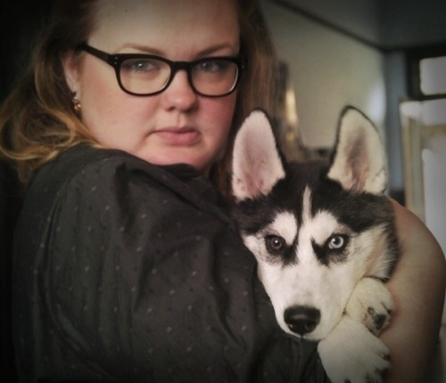

Thu, 28 Jul 2011 16:15:00 · sky · husky · friends
i love this pix of my best est mate bo4aridze

I love this pix of my best-est mate @bo4aridze with my beast Sky when he was just a wee puppy -
Thu, 28 Jul 2011 16:15:00 · sky · husky · friends

I love this pix of my best-est mate @bo4aridze with my beast Sky when he was just a wee puppy -